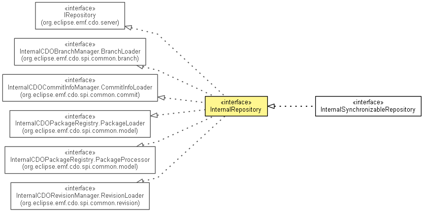

org.eclipse.emf.cdo.spi.server
Interface InternalRepository
- All Superinterfaces:
- CDOCommonRepository, CDOTimeProvider, IAdaptable, IContainer<Object>, ILifecycle, INotifier, InternalCDOBranchManager.BranchLoader, InternalCDOCommitInfoManager.CommitInfoLoader, InternalCDOPackageRegistry.PackageLoader, InternalCDOPackageRegistry.PackageProcessor, InternalCDORevisionManager.RevisionLoader, IQueryHandlerProvider, IRepository
- All Known Subinterfaces:
- InternalFailoverParticipant, InternalSynchronizableRepository
- public interface InternalRepository
- extends IRepository, InternalCDOPackageRegistry.PackageProcessor, InternalCDOPackageRegistry.PackageLoader, InternalCDOBranchManager.BranchLoader, InternalCDORevisionManager.RevisionLoader, InternalCDOCommitInfoManager.CommitInfoLoader

If the meaning of this type isn't clear, there really should be more of a description here...
- Since:
- 3.0
- No Implement
- This interface is not intended to be implemented by clients.
- No Extend
- This interface is not intended to be extended by clients.
|
Method Summary |
void |
commit(InternalCommitContext commitContext,
OMMonitor monitor)
|
InternalCommitContext |
createCommitContext(InternalTransaction transaction)
|
long[] |
createCommitTimeStamp(OMMonitor monitor)
Returns a commit time stamp that is guaranteed to be unique in this repository. |
void |
endCommit(long timeStamp)
Notifies the repository of the completion of a commit. |
IStoreAccessor |
ensureChunk(InternalCDORevision revision,
EStructuralFeature feature,
int chunkStart,
int chunkEnd)
|
void |
ensureChunks(InternalCDORevision revision)
|
void |
failCommit(long timeStamp)
Notifies the repository of the failure of a commit. |
long[] |
forceCommitTimeStamp(long timestamp,
OMMonitor monitor)
Like createCommitTimeStamp(OMMonitor), but forces the repository to use the timestamp value passed in as
the argument. |
InternalCDOBranchManager |
getBranchManager()
|
CDOChangeSetData |
getChangeSet(CDOBranchPoint startPoint,
CDOBranchPoint endPoint)
|
InternalCDOCommitInfoManager |
getCommitInfoManager()
|
InternalCommitManager |
getCommitManager()
|
InternalLockManager |
getLockingManager()
|
InternalLockManager |
getLockManager()
Deprecated. As of 4.1 use getLockingManager(). |
Set<CDOID> |
getMergeData(CDORevisionAvailabilityInfo targetInfo,
CDORevisionAvailabilityInfo sourceInfo,
CDORevisionAvailabilityInfo targetBaseInfo,
CDORevisionAvailabilityInfo sourceBaseInfo,
OMMonitor monitor)
|
long |
getOptimisticLockingTimeout()
|
InternalCDOPackageRegistry |
getPackageRegistry()
Same as calling getPackageRegistry(true). |
InternalCDOPackageRegistry |
getPackageRegistry(boolean considerCommitContext)
|
Semaphore |
getPackageRegistryCommitLock()
|
InternalQueryManager |
getQueryManager()
|
InternalCDORevisionManager |
getRevisionManager()
|
InternalSessionManager |
getSessionManager()
|
InternalStore |
getStore()
|
void |
handleLobs(long fromTime,
long toTime,
CDOLobHandler handler)
|
void |
handleRevisions(EClass eClass,
CDOBranch branch,
boolean exactBranch,
long timeStamp,
boolean exactTime,
CDORevisionHandler handler)
|
void |
initMainBranch(InternalCDOBranchManager branchManager,
long timeStamp)
|
void |
initSystemPackages()
|
boolean |
isSkipInitialization()
|
void |
loadLob(byte[] id,
OutputStream out)
|
CDOSessionProtocol.LockObjectsResult |
lock(InternalView view,
IRWLockManager.LockType type,
List<CDORevisionKey> keys,
boolean recursive,
long timeout)
|
void |
notifyReadAccessHandlers(InternalSession session,
CDORevision[] revisions,
List<CDORevision> additionalRevisions)
|
void |
notifyWriteAccessHandlers(ITransaction transaction,
IStoreAccessor.CommitContext commitContext,
boolean beforeCommit,
OMMonitor monitor)
|
void |
queryLobs(List<byte[]> ids)
|
void |
replicate(CDOReplicationContext context)
|
CDOReplicationInfo |
replicateRaw(CDODataOutput out,
int lastReplicatedBranchID,
long lastReplicatedCommitTime)
|
void |
sendCommitNotification(InternalSession sender,
CDOCommitInfo commitInfo)
Deprecated. As of 4.2 use sendCommitNotification(InternalSession, CDOCommitInfo, boolean) |
void |
sendCommitNotification(InternalSession sender,
CDOCommitInfo commitInfo,
boolean clearResourcePathCache)
|
void |
setBranchManager(InternalCDOBranchManager branchManager)
|
void |
setLastCommitTimeStamp(long commitTimeStamp)
|
void |
setName(String name)
|
void |
setProperties(Map<String,String> properties)
|
void |
setQueryHandlerProvider(IQueryHandlerProvider queryHandlerProvider)
|
void |
setRevisionManager(InternalCDORevisionManager revisionManager)
|
void |
setRootResourceID(CDOID rootResourceID)
|
void |
setSessionManager(InternalSessionManager sessionManager)
|
void |
setSkipInitialization(boolean skipInitialization)
|
void |
setState(CDOCommonRepository.State state)
|
void |
setStore(InternalStore store)
|
void |
setType(CDOCommonRepository.Type type)
|
CDOSessionProtocol.UnlockObjectsResult |
unlock(InternalView view,
IRWLockManager.LockType type,
List<CDOID> ids,
boolean recursive)
|
| Methods inherited from interface org.eclipse.emf.cdo.server.IRepository |
addCommitInfoHandler, addHandler, getCommitInfoHandlers, getHandlers, getLastCommitTimeStamp, getProperties, getQueryHandlerProvider, removeCommitInfoHandler, removeHandler, setInitialPackages, validateTimeStamp, waitForCommit |
| Methods inherited from interface org.eclipse.emf.cdo.common.CDOCommonRepository |
getCreationTime, getIDGenerationLocation, getName, getObjectIDTypes, getRootResourceID, getState, getStoreType, getType, getUUID, isEnsuringReferentialIntegrity, isSerializingCommits, isSupportingAudits, isSupportingBranches, isSupportingEcore, waitWhileInitial |
setName
void setName(String name)
setType
void setType(CDOCommonRepository.Type type)
setState
void setState(CDOCommonRepository.State state)
getStore
InternalStore getStore()
- Specified by:
getStore in interface IRepository
setStore
void setStore(InternalStore store)
setProperties
void setProperties(Map<String,String> properties)
getBranchManager
InternalCDOBranchManager getBranchManager()
- Specified by:
getBranchManager in interface IRepository
setBranchManager
void setBranchManager(InternalCDOBranchManager branchManager)
getPackageRegistryCommitLock
Semaphore getPackageRegistryCommitLock()
- Since:
- 4.1
getPackageRegistry
InternalCDOPackageRegistry getPackageRegistry()
- Same as calling
getPackageRegistry(true).
- Specified by:
getPackageRegistry in interface IRepository
getPackageRegistry
InternalCDOPackageRegistry getPackageRegistry(boolean considerCommitContext)
getRevisionManager
InternalCDORevisionManager getRevisionManager()
- Specified by:
getRevisionManager in interface IRepository
setRevisionManager
void setRevisionManager(InternalCDORevisionManager revisionManager)
getCommitInfoManager
InternalCDOCommitInfoManager getCommitInfoManager()
- Specified by:
getCommitInfoManager in interface IRepository
getSessionManager
InternalSessionManager getSessionManager()
- Specified by:
getSessionManager in interface IRepository
setSessionManager
void setSessionManager(InternalSessionManager sessionManager)
getLockManager
@Deprecated
InternalLockManager getLockManager()
- Deprecated. As of 4.1 use
getLockingManager().
- Specified by:
getLockManager in interface IRepository
getLockingManager
InternalLockManager getLockingManager()
- Specified by:
getLockingManager in interface IRepository
- Since:
- 4.1
getQueryManager
InternalQueryManager getQueryManager()
setQueryHandlerProvider
void setQueryHandlerProvider(IQueryHandlerProvider queryHandlerProvider)
getCommitManager
InternalCommitManager getCommitManager()
createCommitContext
InternalCommitContext createCommitContext(InternalTransaction transaction)
createCommitTimeStamp
long[] createCommitTimeStamp(OMMonitor monitor)
- Returns a commit time stamp that is guaranteed to be unique in this repository. At index 1 of the returned
long array is the previous commit time.
- Since:
- 4.0
forceCommitTimeStamp
long[] forceCommitTimeStamp(long timestamp,
OMMonitor monitor)
- Like
createCommitTimeStamp(OMMonitor), but forces the repository to use the timestamp value passed in as
the argument. This should be called only to force the timestamp of the first commit of a new repository to be equal
to its creation time.
- Since:
- 4.0
endCommit
void endCommit(long timeStamp)
- Notifies the repository of the completion of a commit. The value passed in must be a value obtained earlier through
createCommitTimeStamp(OMMonitor)
- Since:
- 4.0
failCommit
void failCommit(long timeStamp)
- Notifies the repository of the failure of a commit. The value passed in must be a value obtained earlier through
createCommitTimeStamp(OMMonitor)
- Since:
- 4.0
commit
void commit(InternalCommitContext commitContext,
OMMonitor monitor)
- Since:
- 4.2
sendCommitNotification
@Deprecated
void sendCommitNotification(InternalSession sender,
CDOCommitInfo commitInfo)
- Deprecated. As of 4.2 use
sendCommitNotification(InternalSession, CDOCommitInfo, boolean)
- Since:
- 4.0
sendCommitNotification
void sendCommitNotification(InternalSession sender,
CDOCommitInfo commitInfo,
boolean clearResourcePathCache)
- Since:
- 4.2
setRootResourceID
void setRootResourceID(CDOID rootResourceID)
setLastCommitTimeStamp
void setLastCommitTimeStamp(long commitTimeStamp)
- Since:
- 4.0
ensureChunks
void ensureChunks(InternalCDORevision revision)
- Since:
- 4.1
ensureChunk
IStoreAccessor ensureChunk(InternalCDORevision revision,
EStructuralFeature feature,
int chunkStart,
int chunkEnd)
notifyReadAccessHandlers
void notifyReadAccessHandlers(InternalSession session,
CDORevision[] revisions,
List<CDORevision> additionalRevisions)
notifyWriteAccessHandlers
void notifyWriteAccessHandlers(ITransaction transaction,
IStoreAccessor.CommitContext commitContext,
boolean beforeCommit,
OMMonitor monitor)
replicate
void replicate(CDOReplicationContext context)
replicateRaw
CDOReplicationInfo replicateRaw(CDODataOutput out,
int lastReplicatedBranchID,
long lastReplicatedCommitTime)
throws IOException
- Throws:
IOException
getChangeSet
CDOChangeSetData getChangeSet(CDOBranchPoint startPoint,
CDOBranchPoint endPoint)
getMergeData
Set<CDOID> getMergeData(CDORevisionAvailabilityInfo targetInfo,
CDORevisionAvailabilityInfo sourceInfo,
CDORevisionAvailabilityInfo targetBaseInfo,
CDORevisionAvailabilityInfo sourceBaseInfo,
OMMonitor monitor)
- Since:
- 4.0
queryLobs
void queryLobs(List<byte[]> ids)
- Since:
- 4.0
handleLobs
void handleLobs(long fromTime,
long toTime,
CDOLobHandler handler)
throws IOException
- Throws:
IOException- Since:
- 4.0
loadLob
void loadLob(byte[] id,
OutputStream out)
throws IOException
- Throws:
IOException- Since:
- 4.0
handleRevisions
void handleRevisions(EClass eClass,
CDOBranch branch,
boolean exactBranch,
long timeStamp,
boolean exactTime,
CDORevisionHandler handler)
- Since:
- 4.0
isSkipInitialization
boolean isSkipInitialization()
- Since:
- 4.0
setSkipInitialization
void setSkipInitialization(boolean skipInitialization)
- Since:
- 4.0
initSystemPackages
void initSystemPackages()
- Since:
- 4.0
initMainBranch
void initMainBranch(InternalCDOBranchManager branchManager,
long timeStamp)
- Since:
- 4.0
lock
CDOSessionProtocol.LockObjectsResult lock(InternalView view,
IRWLockManager.LockType type,
List<CDORevisionKey> keys,
boolean recursive,
long timeout)
- Since:
- 4.1
unlock
CDOSessionProtocol.UnlockObjectsResult unlock(InternalView view,
IRWLockManager.LockType type,
List<CDOID> ids,
boolean recursive)
- Since:
- 4.1
getOptimisticLockingTimeout
long getOptimisticLockingTimeout()
- Since:
- 4.2
Copyright (c) 2011, 2012 Eike Stepper (Berlin, Germany) and others.